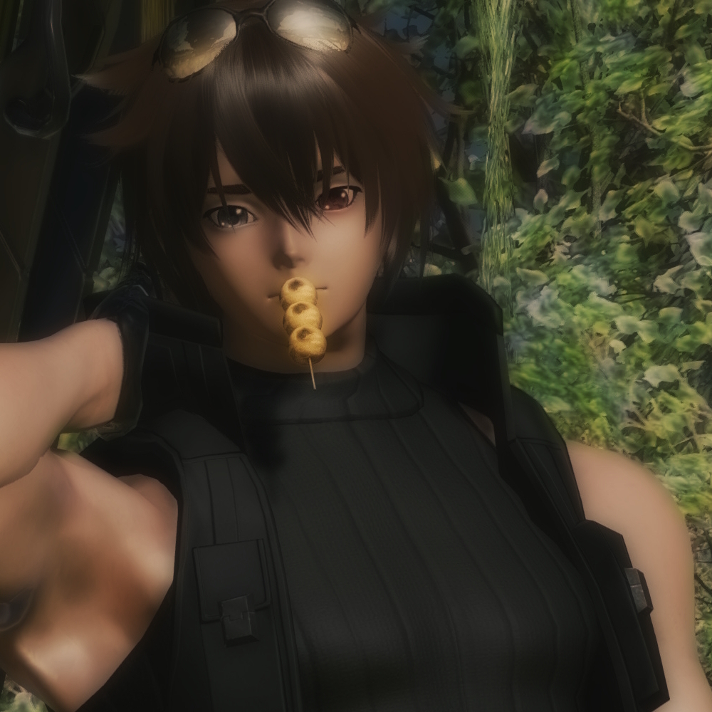

Character Page

Zane McRay
- Fullname: Zane Anthony McRay (born Jung Se In)
- Nickname(s): -
- Species: DNA-mutated Human
- Nationality: Korean
- Language(s): English, Korean & Japanese
- Birthdate: 2nd of January 1995
- Height: 186 cm
- Weight: 77 kg
- MBTI: ESFP-A
- Interests: Nightlife, Music, Guns & Cars
- Career: Musician, Assassin & Farmer
- Relatives: Naya (mother), Rey (father), Minzu (younger sister), Hobin (younger brother), Miro McRay (son), Rose (daughter), Iris (niece) & Shawn Yun (nephew)
- Partner(s): Clarissa
Lotsa lore here!
Discography
Lotsa songs here!
Gallery
Lotsa pics here!
Game origins
Phantasy Star Online 2